The Birds

Starring: Rod Taylor, Jessica Tandy, Suzanne Pleshette
Director: Alfred Hitchcock
Writer: Evan Hunter, Daphne du Maurier
Producer: Alfred Hitchcock
The Birds is a 1963 American natural horror film produced and directed by Alfred Hitchcock, released by Universal Pictures and starring Rod Taylor, Jessica Tandy, Suzanne Pleshette, and introducing Tippi Hedren in her film debut.
Trivia
- Won the Golden Globe Award for New Star of the Year – Actress.
- Also nominated for: Academy Award for Best Visual Effects.
- Based on The Birds (short story by Daphne du Maurier).
- The screenplay for the film is based on Daphne du Maurier's novella "The Birds", which was first published in her 1952 short story collection The Apple Tree.
- The protagonist of the novella is a farm hand living in Cornwall, and the conclusion of the story is far more pessimistic than that of the film.
- The relationship between Hunter and Hitchcock during the creation of The Birds was documented by the writer in his 1997 autobiography, Me and Hitch, which contains a variety of correspondence between the writer, director and Hitchcock's assistant, Peggy Robertson.
Filming Locations
- San Francisco
- California
- Bodega
- Many exterior scenes were filmed on location at Bodega Bay and Bodega, California.
Previous Showings
13 Runs • 12 Festivals
All runs on record (13):
- March 30 - April 3, 1992w/ Psycho
- April 20 - 23, 2000Alfred Hitchcock Film Festivalw/ Marnie
- July 26 - 29, 2003Summer 2003w/ Psycho
- March 29 - 31, 2008HITCHCOCK: Ten Weeks of the films of the Master of Suspensew/ Psycho
- September 25 - 28, 2009Hitchcock 2009w/ Psycho
- April 4 - 7, 2013Hitchcock 2013w/ Psycho
- March 5 - 8, 2015Hitchcock 2015w/ Psycho
- April 21 - 24, 2016Hitchcock 2016w/ Marnie
- June 8 - 10, 2018Hitchcock and Other Masters of Suspense, plus Frankenstein at 200w/ Psycho
- September 2 - 3, 2023Summer 2023: The Best of Cary Grant and Alfred Hitchcockw/ Psycho
- June 8 - 9, 2024Hitchcock, The Master of Suspense 2024w/ Marnie
- July 18 - 20, 2025Hitchcock, The Master of Suspense 2025w/ Vertigo
- May 23 - 24, 2026Hitchcock, The Master of Suspense 2026w/ Vertigo